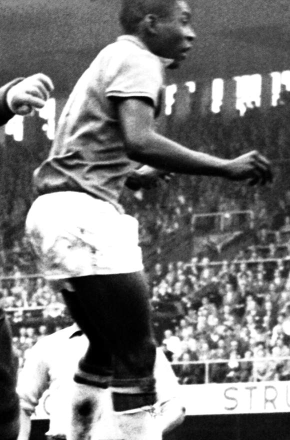
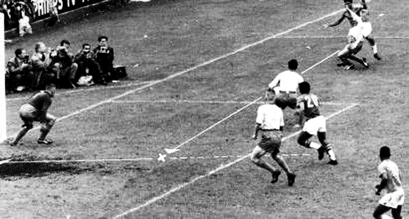
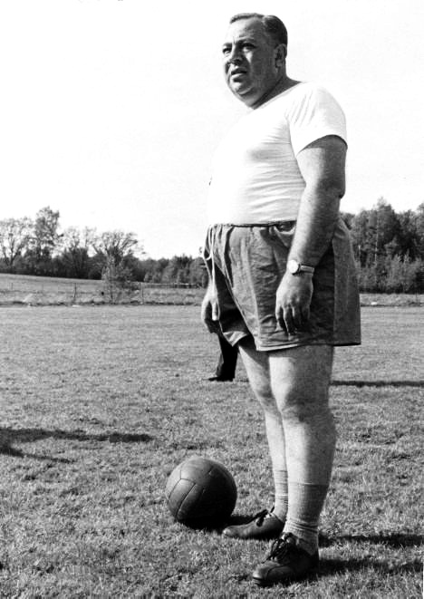
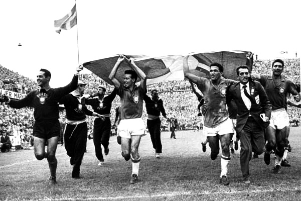

PELÉ · 17 AÑOS
BRASIL · FINAL DE 1958
FOTO: SCANPIX · DOMINIO PÚBLICO
NO JUEGA
JUEGA
INFORME
PSICÓLOGO · SELECCIÓN DE BRASIL
PELÉ
INFANTIL
RECREACIÓN

GARRINCHA
FINAL DE 1958, CON VAVÁ · FOTO: SCANPIX · DOMINIO PÚBLICO
NO JUEGA
JUEGA

Suecia · 1958
V. FEOLA EN HINDÅS · SVENSKT PRESSFOTO / SCANPIX · DOMINIO PÚBLICO
TESTS
CARPETA Y FICHAS: RECREACIÓN
VICENTE FEOLA
SELECCIONADOR DE BRASIL
1958 · SVENSKT PRESSFOTO / SCANPIX · D. P.
— SEGÚN LA AUTOBIOGRAFÍA DE PELÉ (CITADA POR FIFA)
BRASIL · CAMPEÓN 1958

VUELTA DE HONOR, 29/06/1958 · FOTO: SCANPIX · DOMINIO PÚBLICO · PORTADA: RECREACIÓN
FINAL · 29 JUN 1958 · ESTOCOLMO
BRASIL
0
SUECIA
0
RECREACIÓN
TEST
FICHA DE JUGADOR
1 TARDE
RECREACIÓN
CALENDARIO
RECREACIÓN
FOTOS: SVENSKT PRESSFOTO / SCANPIX (DOMINIO PÚBLICO), VÍA WIKIMEDIA COMMONS
FICHAS, INFORME, SELLOS, REVISTA Y CALENDARIO: RECREACIÓN
FUENTES: FIFA, FOURFOURTWO